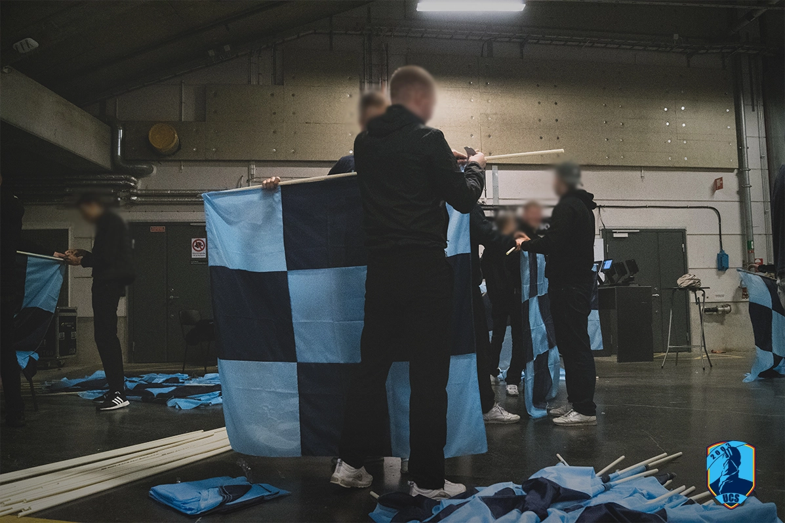
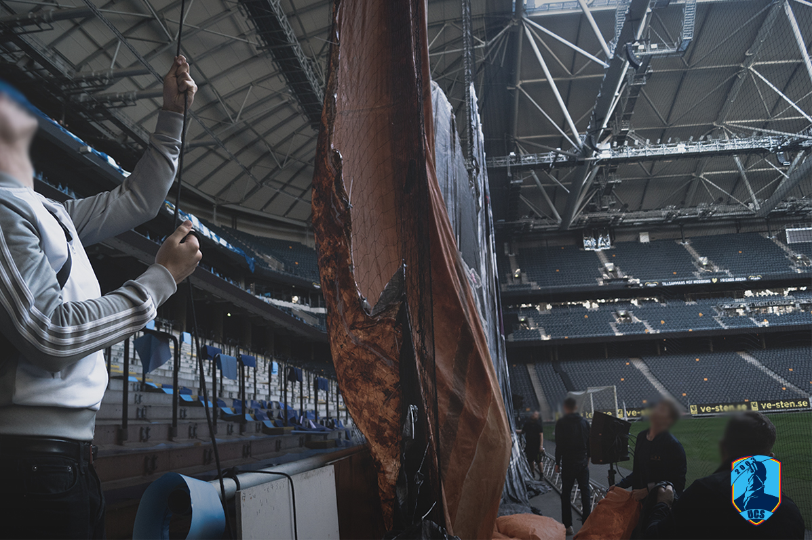
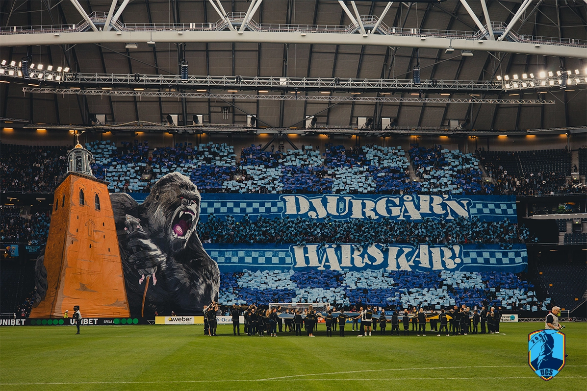
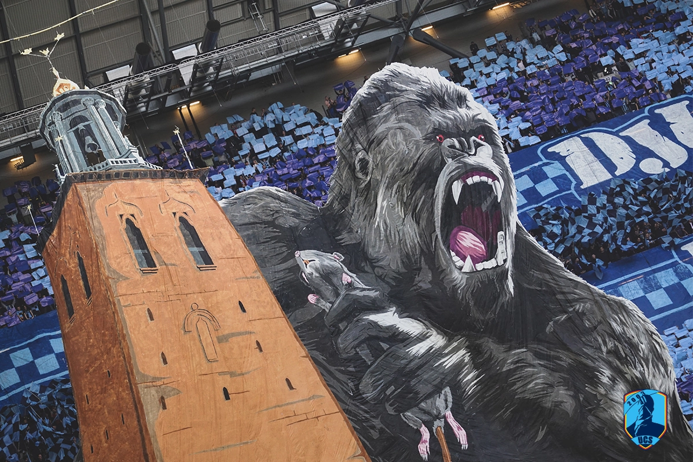
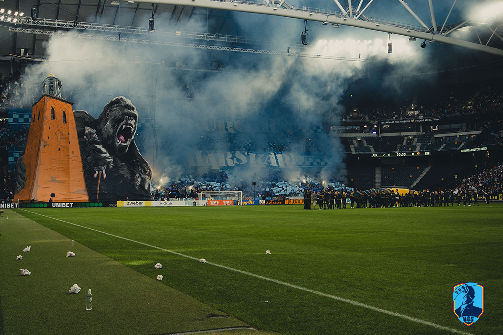

Tifo 1 AIK-DIF 2023-09-14
The Gorilla Tifo
About the tifo from Sofialäktaren Instagram account: "Our initial theme for Sunday's derby tifo changed to a gorilla, suggested just before work started. The computer-drawn sketch was numbered and painted in a local space panel by panel. The text 'Djurgår'n rules' was scaled up, covering more of the background than planned. Despite changes, the process turned out better than expected."
Materials used: 1500 m2 fabric, 70 liters
paint, 300 spray cans, 7000 sheets, 550 flags.
Cost:
approximately 7700 euros
Photos from UCS-Sthlm





